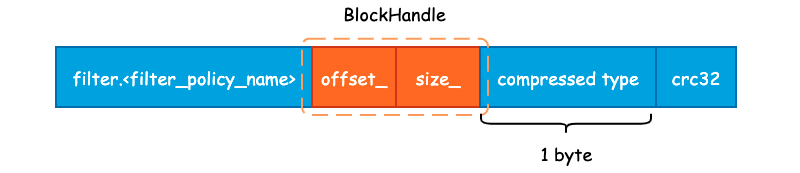

SSTable 之索引
在前面我们已经将 Data Block 和 Filter Block 的格式和内容梳理完毕了，由于 Data Block 和 Filter Block 在文件中是连续存储的，并且大小不固定，所以需要为其建立索引，也就是 Metaindex Block 和 Index Block。
1. Metaindex Block
Metaindex Block 用于存储 Filter Block 在整个 SSTable 中的索引信息，并且只有一行记录，只需要记录下所使用的 Filter Policy 名称，以及 BlockHandle 信息。首先来看下 BlockHandle 对象:
class BlockHandle {
public:
/* BlockHandle 的最大长度，即 20 字节 */
enum { kMaxEncodedLength = 10 + 10 };
private:
uint64_t offset_; /* 偏移量 */
uint64_t size_; /* 数据大小 */
};
也就是说，对于 Filter Block 而言，只需要记录下 Filter Block 的起始地址和大小即可，下面为 Metaindex Block 的完整记录信息:

Metaindex Block 的起始位置为 "filter." 和过滤器名字所组成的一个常量字符串，如果使用默认的 BloomFilterPolicy 的话，那么这个值就为 "filter.leveldb.BuiltinBloomFilter2"。
紧接着就是 BlockHandle 的内容，这部分的内容起始就是 Filter Block 在 SSTable 的起始偏移量和 Filter Block 的大小，使用 varint64 变长编码的方式写入至结果字符串中。
最后，就是 Block 的统一格式后缀了。包括 1 字节的压缩类型，默认为 snappy 压缩，以及 4 字节的 CRC32 校验和。
2. Index Block
Index Block 的作用除了记录下每个 Data Blcok 的起始位置和大小以外，还会额外记录每一个 Data Block 的最大 Key 值，由 FindShortestSeparator() 方法计算得出，我们将在下一节中详细解释这个最大 Key 值是如何计算得到的。
记录下每一个 Data Block 的最大 Key 值主要目的就是为了方便二分搜索算法的执行，降低查询 SSTable 的时间复杂度，Index Block 的格式如下图所示:

这种记录下每一个 Data Block 的最大 Key 值其实和 InnoDB Page Directory 非常之类似，通过记录一些额外的信息来优化搜索。关于 Page Diectory 更详细的信息，可参考另一个项目 Psyduck: InnoDB 数据页结构。
紧接着就是常规的 BlockHandle 内容以及 Compressed Type 和 CRC32 了。
3. Footer
最后我们再来看下 Footer。Footer 大小固定，为常量值 48 字节。Data Block 中的每一个 Block 由 Index Block 进行索引，Filter Block 的起始地址由 Metaindex Block 进行索引。由于 Index Block 和 Metaindex Block 的大小同样不固定，所以我们还需要对 Index Block 和 Metaindex Block 进行索引，并且这个索引的大小和所处文件位置必须是固定的，否则我们就缺少了一个入口点。
class Footer {
public:
/* 固定大小，48 字节，不足 48 字节时将使用 padding 填充 */
enum { kEncodedLength = 2 * BlockHandle::kMaxEncodedLength + 8 };
private:
BlockHandle metaindex_handle_; /* 索引 Metaindex Block */
BlockHandle index_handle_; /* 索引 Index Block */
};
除了这两个索引以外，leveldb 还会在 SSTable 的结尾处写入一个名为 kTableMagicNumber 的“魔数”，具体作用笔者也还没有整明白，其内容为 "http://code.google.com/p/leveldb/" 使用 sha1 哈希之后的前 8 个字节。Footer 的整体布局如下图所示:

4. 小结
本篇文章其实是对 SSTable 的进一步补充，以便更容易理解 TableBuilder 的建表过程，下面给出一个更完整详细的 SSTable 示意图: